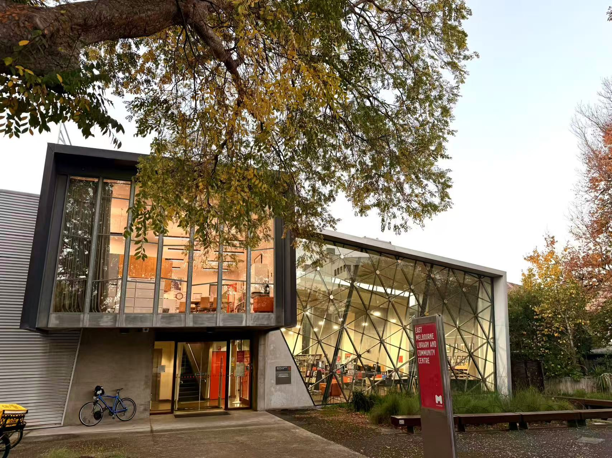
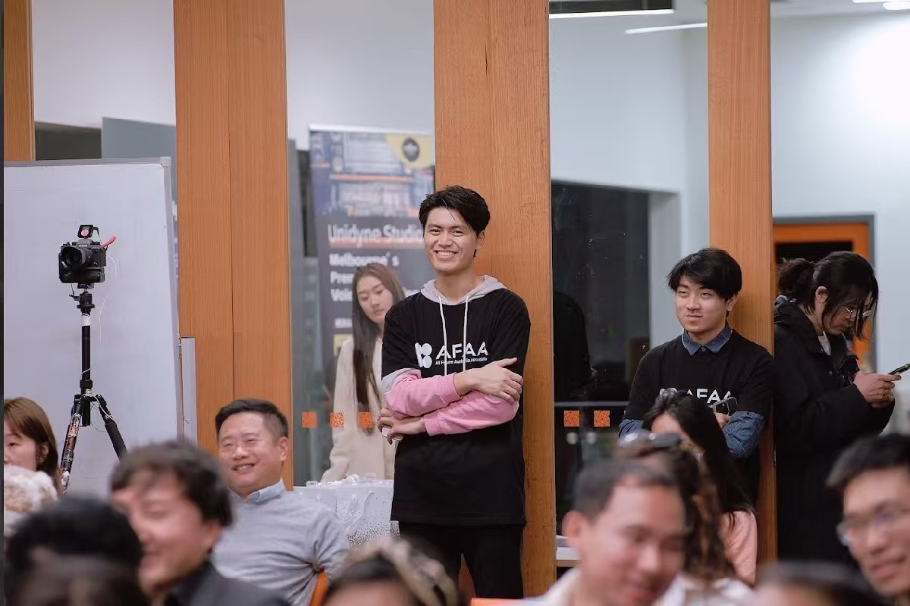
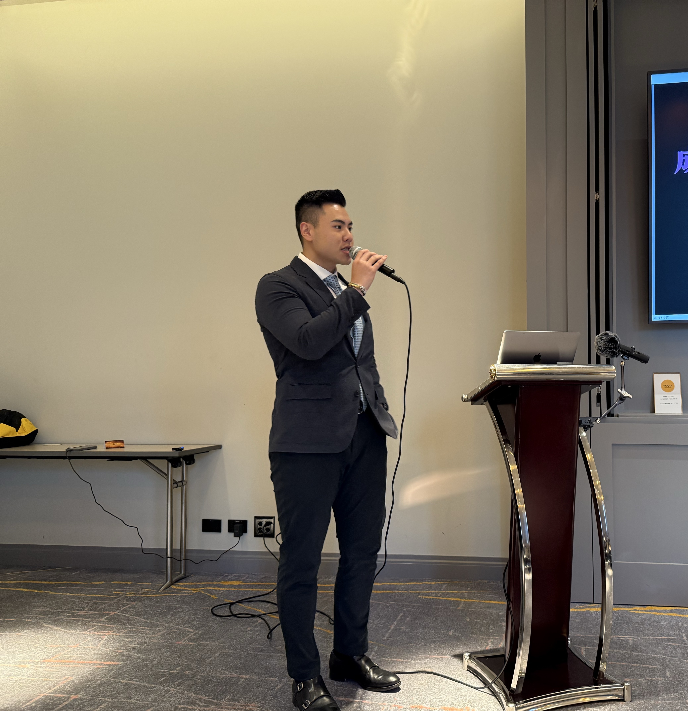

Oscar Swift
Tutor & Developer
Passionate about technology and innovation. Graduated from the University of Melbourne with a Bachelor of Science in Computer Science. Currently working as a tutor. Willing to collaborate on web3 projects and build my own games.
Foshan, China
University of Melbourne
Full-stack Developer
Activity Feed
Events
Preview
Web3 & AI Conference Experience
Had an amazing time at the Web3 & AI Conference! Met brilliant minds in the industry, learned about cutting-edge developments in blockchain and AI integration. The highlight was discussing the future of decentralized AI systems with industry leaders.





Thoughts
Preview
2023 in Review: Growth & Reflection
2023 was a year of transformation and learning. Embraced new challenges, improved my coding skills, and contributed to open source projects.
Project
Launched My Personal Website
Released a brand new personal website with a modern UI, smooth animations, and responsive design.
Milestone
Graduated from University
Successfully completed my Computer Science degree and started my journey as a developer.